Acordei no Hotel Rech em Braço do Norte/SC e desci para o café da manhã, que estava incluído no preço da estadia. Não tinha tanta variedade, mas era maneiro, com iogurte, sucos e bolos, e o básico de sempre: pão, queijo, e não tinha presunto mas sim um apresuntado horrível que não consegui comer.
Voltei ao quarto, ritual da bagagem na moto, lubrificação da corrente, etc, pé na estrada. E, finalmente, sem chuva! Muitas nuvens, mas sem chuva!
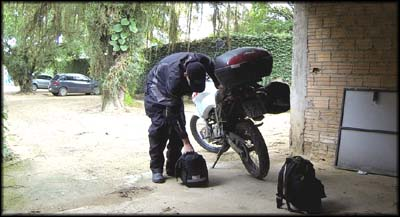
Agora eu já sabia como ir para Grão Pará, e fiz o caminho certinho. Passei pela cidade devagar, observando as pequenas casas... acabou. Nem deu tempo de passar a terceira marcha na motoca.
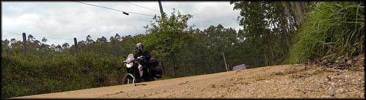Começava a grande aventura do dia
Então vi a placa indicando a direção para a Serra do Corvo Branco, e uma placa vermelha fechando a rua de terra batida com os dizeres "Interditado, em obras". Puta merda. Que se dane, ignorei a placa e segui pelo canto.
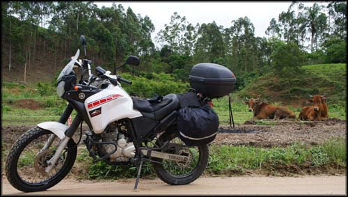Estradinha de terra, fazendas e gado
Dali pra frente era estrada de chão, mas estava em boas condições. Subi, subi, subi, diversas fazendas, rios, belas paisagens, já podia sentir minha alma retornando ao corpo depois de tanta chuva na cabeça dos dias anteriores.
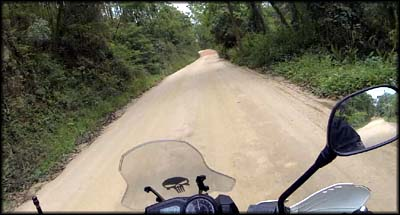Estradinha simpática no início... só no início...
A estradinha cortava várias fazendas, e ia margeando um pequeno riacho. Clima muito agradável, criação de gados, animais bem tratados.
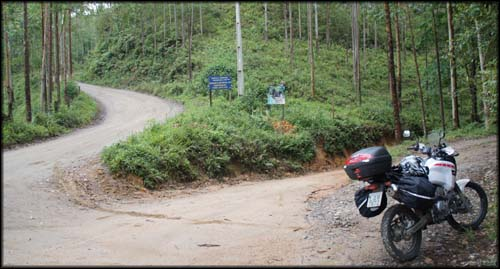Começou a lama, parada para vestir a calça de chuva
Até que após uns 10km cheguei num trecho em que o piso de barro estava úmido, e apesar do calor, resolvi colocar a calça de chuva porque era mais fácil de limpar, já que era óbvio que eu iria me sujar bastante. Segui mais alguns quilômetros, parando para tirar fotos. E a estrada começou a ficar barrenta e molhada, offroad total, a moto escorregando e saindo de traseira. Até aí tranquilo, eu costumo fazer offroad assim no Rio.
Comecei a passar por operários com tratores em alguns trechos da estrada, e todos paravam o que estavam fazendo e ficavam me olhando passar, alguns com cara de espanto, incrédulos, deviam estar pensando "onde esse cara pensa que vai..." rs. Ao passar por um dos grupos de trabalhadores, acenei, e pude ouvir um dizendo pro outro "Ah, essa aí vai", se referindo ao perfil da Ténéré com cara de aventureira. Eita, o que me aguardava?
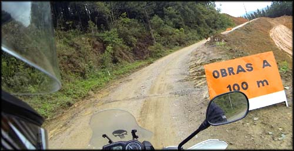Obras na estrada de chão, virou um mar de lama
Até que cheguei num ponto que era um atoleiro só. Já tinha uma pickup S10 atolada, e dois operários conversando perto. Parei e perguntei como estava a estrada dali pra frente. "Ah, esse trecho aqui acho que é o pior", disse um deles. O outro logo discordou "Não, depois tem aquela parte da descida, lá está pior"... já fiquei em dúvida se iria conseguir subir aquelas ladeiras íngremes de lama fofa com a moto carregada.
As chuvas que caíram nos dias anteriores, e o vai e vem de caminhões e tratores pesados deixaram o barro da estrada completamente solto, uma grande piscina de "papa de lama", escorregadia e pegajosa ao mesmo tempo.
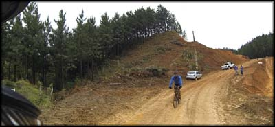O ponto crítico, lama pura...
Nisso desciam em sentido contrário dois caras de bicicletas mountain bike, os dois com lama até no cabelo haha. Perguntei pra eles como estava mais pra cima na estrada, e um deles disse "Ah, até dá pra passar, mas vai se sujar bastante", fazendo cara de mau humorado. Sinistro. Decidi que iria tentar.
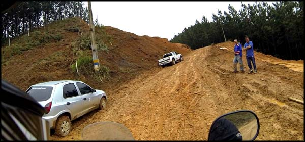A plateia esperando o espetáculo da subida na lama
Os operários cruzaram os braços e ficaram esperando o espetáculo hahaha enrolei o cabo do acelerador e comecei a subir derrapando a traseira da moto, patinando, jogando lama pra cima, pros lados, mas estava indo bem... até que chegou um ponto em que a moto estava afundada na lama até o meio da roda.
Na verdade, como eu havia colocado um pneu mais alto que o original, o paralamas dianteiro ficou muito rente, e a lama foi acumulando alí, até que acabou travando a roda da frente. A roda traseira só derrapava, não conseguia avançar, era como se estivesse com o freio dianteiro acionado.
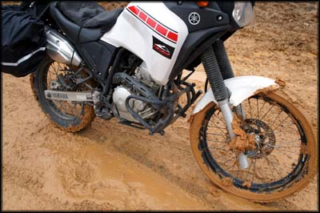A lama travou a roda dianteira, aqui eu já tinha começado a limpar, estava pior...
Meus pés entraram na lama fofa até cobrir o tornozelo, e ficaram grudados, eu mal conseguia puxá-los de volta. A roda da frente travada. Não dava.
Parei, apoiei bem os pés no chão de argila, e comecei a voltar em marcha ré, empurrando a moto para trás, com dificuldade, o pé colado na lama, uma verdadeira batalha para não tombar a moto carregada no meio daquele mar de barro vermelho, e em uma ladeira íngreme. Que guerra.
Consegui empurrar a moto até onde a lama estava menos fofa, e catei uns gravetos para tentar raspar aquele bolo agarrado nos discos de freio e sob o paralamas dianteiro, que estavam travando a roda. Foram bons minutos fazendo isso.
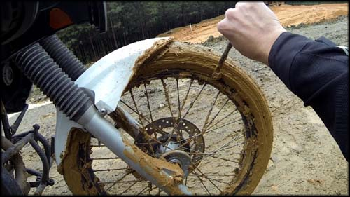Só consegui voltar a rodar depois de tirar bastante barro acumulado entre o paralamas e o pneu
Então veio um trator gigante, e rebocou a S10 ladeira acima, mas com dificuldades, o tratorzão ia derrapando e virando de lado, o cara corrigia, e no fim acabaram subindo.
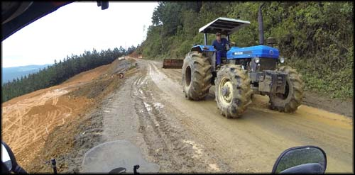Só esse bicho aí pra subir aquele atoleiro. E ainda teve dificuldade.
Eu já estava cogitando retirar o paralamas para impedir o travamento da roda de novo e encarar novamente a missão. Mas pensei melhor, lá na frente poderia estar pior, eu estava sozinho, moto carregada, e ainda queria ir muito mais longe que aquilo. Resolvi não arriscar danificar a moto, e que era melhor voltar. Ainda teria muito tempo para viajar, e achei que o custo benefício daquele passeio não compensava. A Serra do Corvo Branco vai ser meu motivo para voltar àquelas bandas.
Liguei a moto, e fui voltando por onde vim. Andava um pouquinho, devagar, parava, raspava lama para soltar a roda dianteira. Andava mais um pouco, parava, raspava mais lama com um graveto... até que consegui retirar o suficiente do barro sob o paralamas para conseguir rodar normalmente, com a roda bem destravada.
Teria que desistir de subir a Serra do Corvo Branco que eu tanto queria, e ainda por cima voltar um pedação em estrada de chão. Acontece. Passei de volta pelos funcionários que trabalhavam na obra, e gritei "pô, dá não!", e todos ficaram rindo rs.
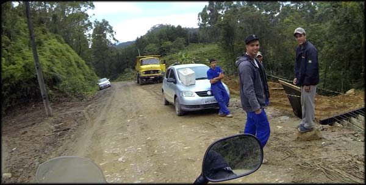Os caras rindo quando eu falei que não tinha como passar, lama dos pés à cabeça
Voltando, cheguei no trecho em que o ria margeava a estrada, e eu queria tentar lavar os freios da moto para tirar a lama que já estava secando e formando uma grossa camada de argila, mas não dava para chegar com a moto nas margens. Desci a pé, e enfiei as botas no rio para tirar o excesso de lama. Me senti alguns quilos mais leve.
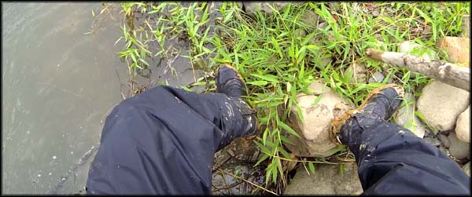Não foi fácil tirar a lama entranhada nas botas
Bom, só restava continuar voltando, e partir pro próximo objetivo: a Serra do Rio do Rastro.
Voltei tudo, até Braço do Norte, de novo, e de lá já peguei o rumo para a cidade de Orleans, e depois seguindo para Lauro Muller/SC, onde parei para abastecer (1.639 Km rodados). Me informei com um pessoal bacana no posto de gasolina sobre como chegar na Rio do Rastro e Morro da Igreja. Bebi um café, comi um salgado (o que restaria ser meu almoço, de novo), e bati um papo com os frentistas que acharam bacana minhas aventuras e demonstraram bastante interesse. Um deles ainda me sugeriu lavar a moto ali perto para tirar todo aquele barro que estava agarrado. Agradeci a sugestão, mas não queria perder esse tempo.
Parado no posto já deu pra sentir o clima do lugar. Algumas motos passando, casais viajando, alforges e jaquetas de cordura, pessoal equipado. Ah, agora eu estava chegando no point das viagens de moto da região.
Me despedi do pessoal do posto e segui viagem, me orientando pelas placas que indicavam a Serra do Rio do Rastro. Logo começaram curvas bem fechadas subindo a serra. Muito bom pilotar nessas curvas, uma recompensa depois de ter desistido de um dos objetivos da viagem.
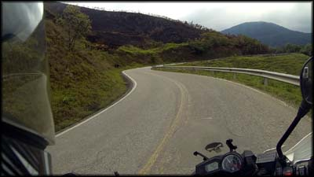Logo na subida da Serra do Rio do Rastro já tem curvas bem legais
Subi, subi, curvas, curvas, até que parei em um mirante com uma magnífica vista dos vales verdes da região. Também havia uma Kombi parada lá, com inscrição de algum instituto de estudos ambientais ou ecológicos, não lembro. E nela estavam quatro caras da Suécia, que tiravam fotos com enormes câmeras profissionais. Nos cumprimentamos rapidamente e eles seguiram viagem. Fiquei um tempinho no mirante, observando a vista e tirando fotos.
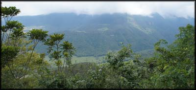Ainda no início da subida, o visual era bacana
Continuei nas curvas, subindo, e começou uma intensa neblina. De repente eu não enxergava cinco metro à frente. Que bosta. Parei em outros mirantes, não dava pra ver nada.
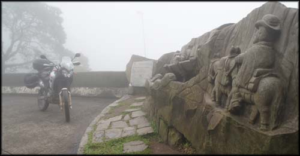Aqui uma tentativa de foto do Monumento aos Tropeiros, a cerração tomava força
Queria muito ver do alto aquela estrada cheia de curvas, como nas fotos que vi na internet. Frustrante. Continuei subindo, até que não consegui ver 2 metros a frente, e passei direto, sem ver, pelo mirante principal da serra, no ponto mais alto, a 1.440 metros de altitude.
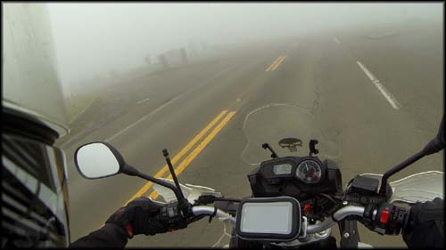Neblina, pouca visibilidade, ficou perigoso
Rodei mais um pouco, e resolvi voltar. Não dava pra continuar seguindo daquele jeito, era cerca de 18:00h e dali a pouco iria escurecer. Eu não sabia o que havia pela frente, e a visibilidade era nula. Comecei a voltar de onde vim, e percebi o tal mirante pelo qual tinha passado direto. Estacionei a moto e fui andando devagar até a beirada, olhava para trás e já nem via mais onde deixei a moto. Sacanagem!
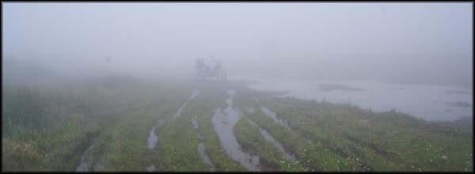No mirante da Rio do Rastro, mal dava pra ver a moto...
Não havia o que fazer ali, então voltei pra motoca e comecei a descer lentamente a Serra do Rio do Rastro de novo, de volta a Lauro Muller.
Na descida, parei para tirar uma foto na entrada de um hotel, e logo depois parou um "senhor" que pilotava uma Ténéré 250 azul. Ele disse que não estava enxergando nada, e que a cerração embaçava seus óculos, e perguntou se eu estava descendo, pois assim ele iria me seguir.
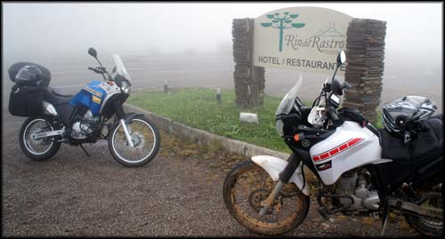Ténéré 250 azul do viajante recém-conhecido
Gente boa o cara, me deu um adesivo do motoclube dele, o "Rota X", e disse que estava indo para Tavares/RS, para assistir a revoada dos pássaros que fariam migração naquela época. Ele tinha reservado um hotel na descida da serra, e perguntou se eu tinha passado por ele. Sim. Passamos então a descer, bem devagar, visibilidade zero, e o acompanhei até o tal hotel.
Chegando no lugar, conheci as instalações na parte de baixo, e nem quis ir ver o quarto. O lugar era bem velho, mas até que parecia arrumado. Só que ficava no meio do nada. Eu queria sair à noite para beber uma cerveja, jantar... ali pra mim, não.
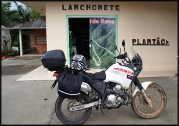Entrada do Hotel, não quis ficar, era no meio da serra, eu queria festa!
Trocamos umas ideias, eu anotei os hotéis que ele tinha pesquisado na região de Tavares e Torres no Rio Grande do Sul. De repente eu incluiria esses lugares no meu roteiro, quem sabe.
Me despedi, e voltei a descer a serra, e já chegando de novo na cidade de Lauro Muller, vi uma placa que dizia "Hotel Beira Rio". É lá mesmo, pensei.
Cheguei no local indicado, em frente ao Fórum da cidade, que aliás é um prédio de pura ostentação. Lamentável, uma obra que deve ter custado uma fortuna numa cidade tão humilde, tão pequena e interiorana. Como se torra dinheiro em nosso país.
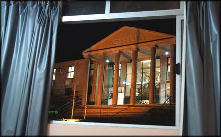Da janela do quarto se via o Fórum, prédio enorme, ostentação
Na verdade o tal Hotel Beira Rio nem era um hotel de verdade. Era o segundo andar da casa de um coroa, que ele dividiu em quartos para alugar. Quando estacionei a moto ele logo já saiu de casa, perguntando se eu procurava hospedagem. Disse que sim, perguntei o preço. "50 reais". Eu não disse nada, mas só pela minha cara ele já pensou e disse em seguida "posso fazer por 40". Tá, deixa eu ver o quarto então. Achei bacana, é bem amplo e limpo, decidi ficar. Mas antes disse que iria comer um salgado no posto de gasolina na entrada da cidade. Fui lá, e não comi salgado algum, mas comprei duas Heinekens geladas, coloquei no baú, e voltei.
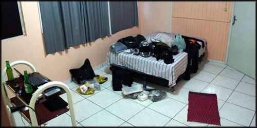O quarto era arrumadinho e limpo. Era, até eu espalhar toda a bagagem...
Tira tudo da moto, espalha no chão do quarto, coloca a câmera pra recarregar, bebe cerveja, toma banho, e vai pra rua, explorar.
Perguntei a uma menina que estava sentada na calçada, e que acho que era filha do cara que alugava os quartos, e ela disse que só tinha uma pizzaria e uma lanchonete nas proximidades.
Saí a pé, e primeiro fui na pizzaria, descendo a rua. Andei um pouco, passei em frente, estava aberta mas não tinha ninguém dentro, só o garçon parado, sozinho. Muito deprê. Subi de novo, e antes de ir na lanchonete indicada, resolvi caminhar pelas ruas da cidade.
Ninguém nas ruas. Uma barraquinha de cachorro quente em frente a uma praça, comércio fechado... fui dando a volta nos quarteirões, ainda impressionado com essa vida diferente de cidades pequenas no interior do sul. Passei em frente a uma enorme igreja, mais um prédio de ostentação em uma cidade pequena e pacata. Até que achei a lanchonete.
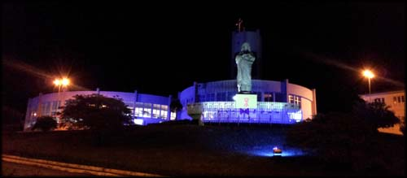Olha o tamanho dessa igreja, a cidade inteira deve caber dentro dela...
Lanchonete do Batista. Tinha um casal acabando de jantar e já pagando a conta, e o garçom. Bom, também é deprê, mas não vou encontrar diferente por aqui.
Pedi uma cerveja, só tinha Antártica Original, não curto muito mas foi essa mesmo. Pedi um Cheeseburger, R$ 15,00 tudo. Fui sentar nas mesinhas que ficam na varanda. Quando estava comendo chegou mais um casal e entrou. Depois chegaram dois caras, pararam o carro, passaram me olhando. Daí, com todo o restaurante vazio, sentaram na mesa bem do lado da minha, bem perto mesmo, se eu esticasse meu braço para o lado encostava no cara. Fiquei bolado, acabei de comer, peguei meu copo de cerveja e fui fumar um cigarro na calçada, para ver qual era a dos caras.
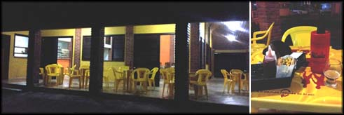 Varanda na Lanchonete do BatistaPaguei a conta e fui embora. Já pensou arrumar encrenca por bairrismo, sei lá. Mas depois a impressão que eu tive é que eu havia sentado no lugar que eles sempre ficam quando vão na lanchonete, e ao que tudo indica devem ir lá toda noite comer sanduíche hehe. Deixa pra lá.
Voltando pro hotel ainda passei em um botequim onde uns cachaças batiam um animado papo, peguei uma Budweiser e subi pro quarto. Descansar. Liguei o netbook para salvar as fotos, dei uma olhada no Google Maps, pensei nas possibilidades, para onde ir no dia seguinte... a essa altura já tinha decidido: não vou desistir, vou subir de novo a Rio do Rastro e vou até o Morro da Igreja. Amanhã, me aguarde.